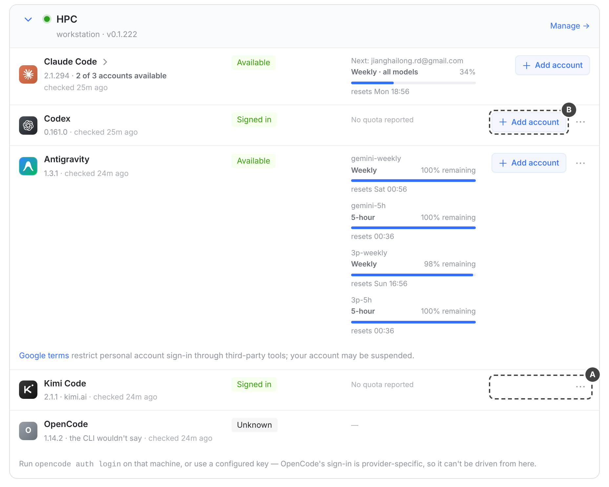
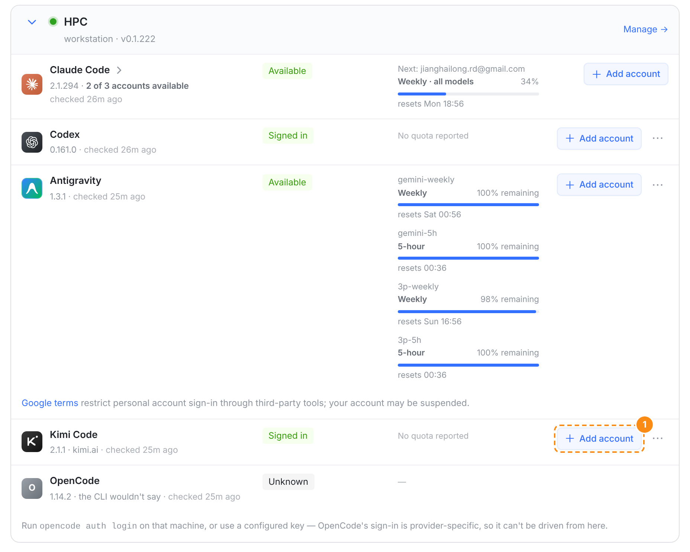
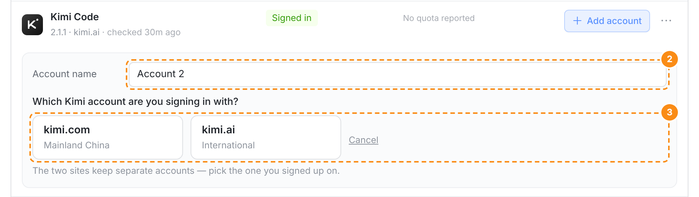
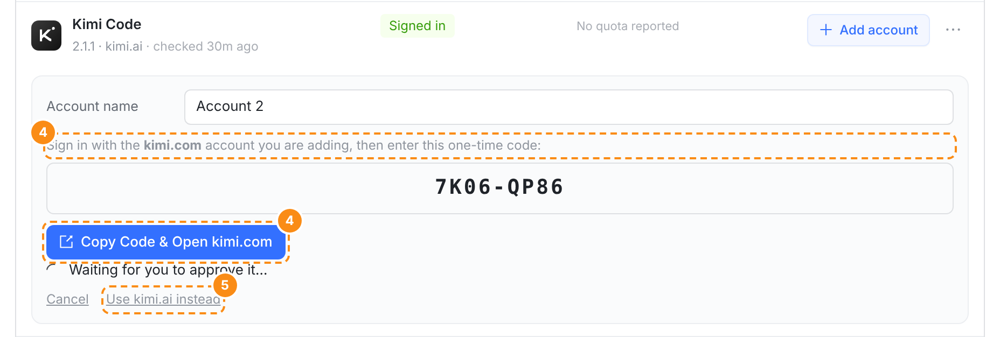
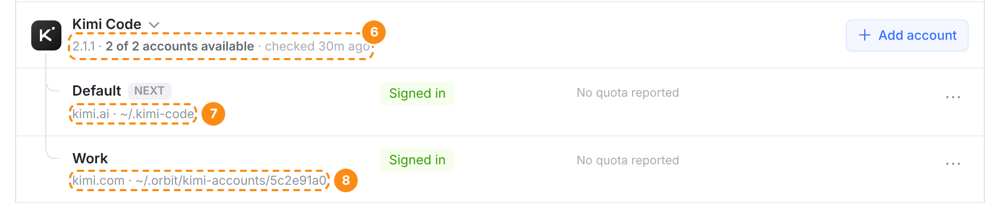
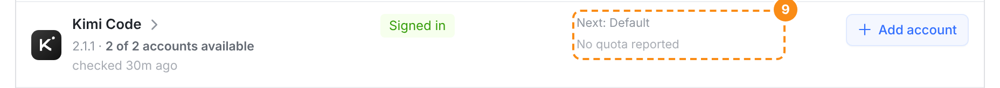
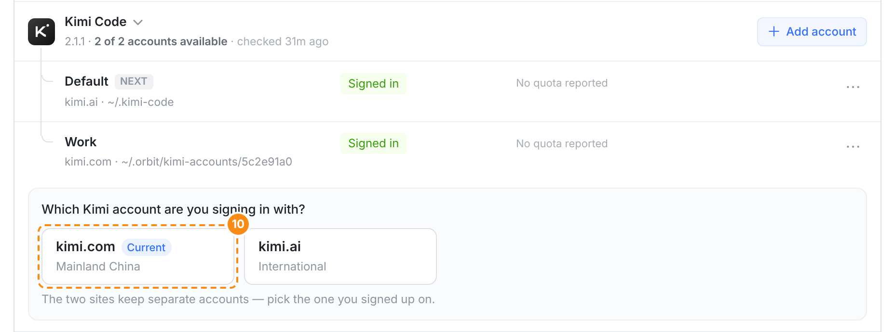
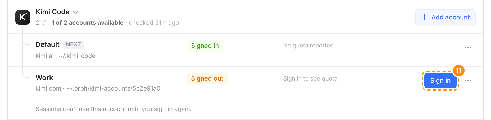

可以做：Kimi Code 的整个登录都在 KIMI_CODE_HOME 一个目录里（凭据只存文件，没有钥匙串），和 Codex 的 CODEX_HOME、Claude Code 的 CLAUDE_CONFIG_DIR 一样能一个账号一个目录；runner 的账号槽、登录中继和各端页面都是按同一份引擎名单（ACCOUNT_ENGINES）做的，Kimi 只是还没进名单。下面每张都是真实 web 控制台截图（同一套组件和样式，接口数据是造的）；「改后」是把提案写进组件后的原型截图（prototype.patch，只含 web 部分）。

A Kimi Code 行只有 ⋯：机器上只能有一个 Kimi 登录，想换号只能 ⋯ → Re-sign in 把它顶掉（换到另一个站点也是顶掉）。B 同样是「Signed in · No quota reported」的 Codex 行，已经有「+ Add account」。

① 位置、样式和 Codex、Antigravity 的一样。只有一个账号时还是一行，副标题照旧写站点（2.1.1 · kimi.ai）。runner 没升级（没声明 kimi-account-login/v1）时不出这个按钮，就是左边现在的样子——旧 runner 会把「加账号」当成重新登录，顶掉 Default。

② 和其他引擎同一个加账号面板，名字先叫 Account 2，随时可改。③ 唯一的不同在这里：Claude / Codex / Antigravity 点开就开始登录，Kimi 先问站点——kimi.com 和 kimi.ai 是两套账号，点哪个就在哪个站点上登录（kimi login --region …）。不预选、不默认，和单账号的 Kimi 登录卡片同一个问题。

④ 设备码这一步就是现有的 Kimi 登录卡片；加账号时提示写成「Sign in with the kimi.com account you are adding」（现在其他引擎写的是「with the other account」，不说站点）。⑤ 选错站点一键换，同一个名字在另一个站点重新开始。登录成功后面板自己收起，多出一行新账号。

⑥ 分组头和 Claude Code 的一样：「2 of 2 accounts available」。站点不再写在头上——每个账号可以不同。⑦⑧ 每个账号的副标题先写站点、再写目录：Default 是原来的 ~/.kimi-code，Work 是新加的 ~/.orbit/kimi-accounts/5c2e91a0。NEXT 是新会话没指定账号时用哪个；⋯ 里是现成的 Rename / Re-sign in / Pause / Remove。

⑨ 收起时头上替账号们说话，规则和 Claude Code 的分组一样：下一个会话用 Default。Kimi 不报额度，这里写 No quota reported，和现在的 Kimi 行一样。

⑩ 重新登录还是那两个站点，Current 标的是这个账号自己的站点（Work 是 kimi.com），不是 Default 的。

⑪ 掉线只影响那个账号：它这一行出 Sign in，分组头变成「1 of 2 accounts available」，Default 上的会话照常跑。
<KIMI_CODE_HOME>/config.toml（managed:kimi-code provider 和模型列表）和 credentials/<key>.json。凭据存储只有文件一种：CLI 里只有 FileTokenStorage，配置里虽有 keyring 选项但没有实现。所以 macOS runner 也能分开——不像 Claude Code 在 Mac 上那份全机共用的钥匙串。KIMI_CODE_HOME 里 kimi provider list --json 是 {"providers": {}}，同一台机器的 ~/.kimi-code 是 kimi.ai 的登录；在临时目录里跑 kimi login --region … 也只写那个目录。KIMI_CODE_HOME 指的目录（kimi_home.go / kimi_acp.go）。所以把账号目录交给会话，就是 CODEX_HOME / CLAUDE_CONFIG_DIR 那一套。account_slot.go）、登录中继（login.go）、移除、控制面和各端都看同一份引擎名单；代码注释原话是「Kimi, OpenCode today simply has no accounts」，Claude Code 多账号那次提交也写了「Not in this change: Kimi slots」。sessions/ 下（Antigravity 的在会话自己的目录里，所以它换账号什么都不用搬）。一个已经说过话的会话换到另一个 Kimi 账号，要把对话搬过去，像 Codex / Claude 各自做的那样。kimi_account_slot.go——账号就是一个 KIMI_CODE_HOME，Default 是 ~/.kimi-code，新加的在 <orbit home>/kimi-accounts/<id>；声明 kimi-account-login/v1、kimi-account-remove/v1。登录状态（kimi acp authenticate）和站点（kimi provider list --json）按账号目录各问一次，账号上报带 kimiRegion；会话 meta 记下账号目录（有会话在用时拒绝移除）；新账号目录先建好 sessions/，否则对话只落在会话的临时 overlay 里，进程一退就没了；模型列表像 Antigravity 那样读 Default（Default 没登录就读第一个已登录的账号）；orbit resume 的 Kimi 分支带上账号目录。workspace.kimi_account、session.kimi_account / kimi_account_pinned；ACCOUNT_CHOICE / ACCOUNT_PINNED 和登录、移除、换账号三张 capability 表各加 kimi；心跳 sanitizer 保留账号的 kimiRegion；几处「only Codex, Claude or Antigravity」的报错文案。ACCOUNT_ENGINES 加 kimi，ACCOUNT_DIR_VAR.kimi = KIMI_CODE_HOME，RunnerEngineAccount.kimiRegion；accountOfEnv 认出 Kimi 自带凭据的会话（不占任何账号）。prototype.patch，约 30 行）：Add account 跟着 kimi-account-login/v1 出现；账号行写站点；Kimi 的加账号面板不自动开始；Current 取账号自己的站点；设备码提示写站点。工作区和输入框的账号选择器跟着名单自动带上 Kimi。keepsAccounts / canAddAccount 加 Kimi（看 capability），加账号表单接上已有的 Kimi 站点选择。规则同上，动手前另出 iOS 图。/usage 会显示套餐额度（「plan quotas」），可以另开一项研究怎么按账号读。